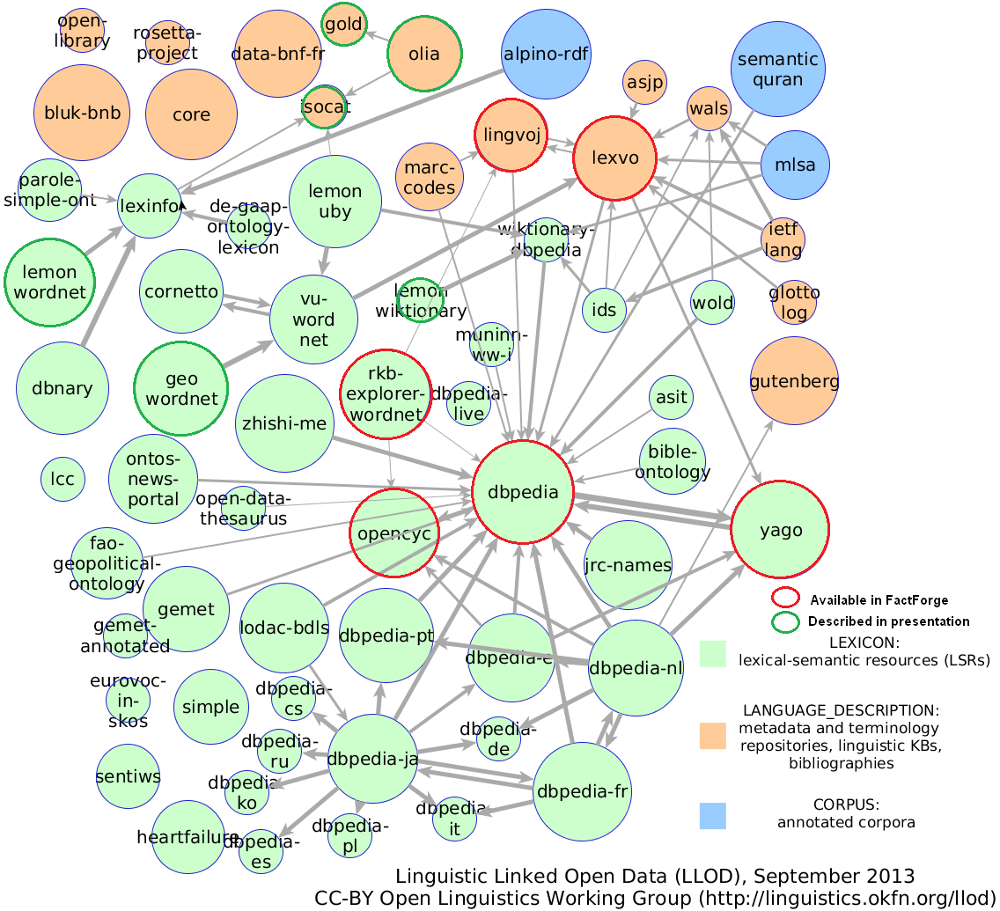
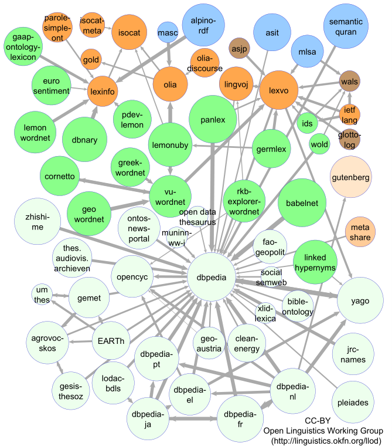
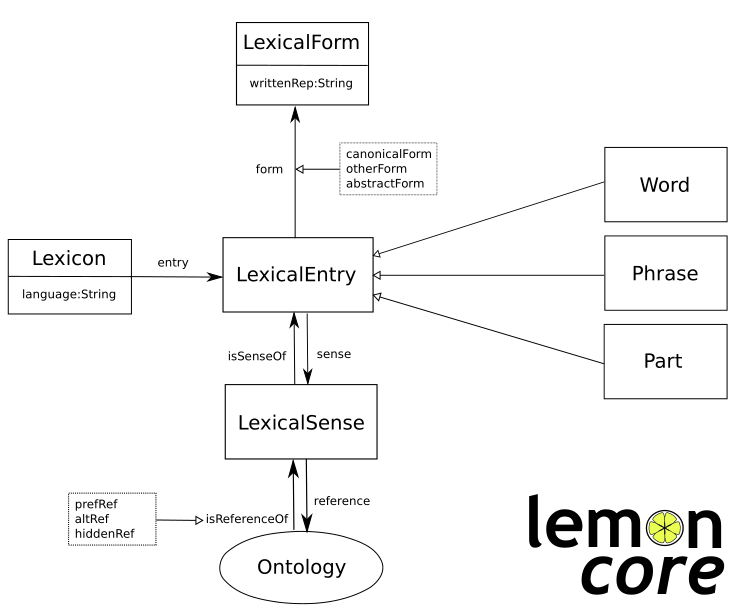

Linguistic LOD & Ontologies
Table of Contents
Motivation
There's been a flurry of activity in recent years to represent NLP data as RDF.
- Covers: Text Annotation (eg NIF, OLIA), Lexical Resources (eg WordNetRDF), Corpora (eg MASC), Semantic Annotation, Opinion/Sentiment Analysis
- Working groups: OntoLex (W3C; Cimiano, Bielefeld), OLWG (OKFN; Chiarcos, Frankfurt), LD4LT (W3C; Lewis, Trinity Dublin), BPMLOD (W3C; Gracia, UPM)
- Projects: MultilingualWeb, LIDER, FALCON, BabelNet, etc, etc
NLP data is usually large, why represent it in RDF?
- Graph model is flexible and universal, appropriate for NLP
- RDF adds schemas and reasoning
- Large linguistic resources are available that may be used profitably
Artifacts
- XML schemas: GRaF, ITS2, LAF, LMF (ISO standards), UBY
- Linguistic Ontologies: FISE, ITS2 (W3C standard), MARL, NERD, NIF (NLP2RDF), OLIA, OntoLing, OntoTag, Penn, Stanford
- Lexical ontologies & thesauri: LEMON, LIME, OntoLex, GOLD, ISOcat, NERD
- Lexical resources: BabelNet, FrameNet, LemonUBY, OmegaNet, VerbNet, Wiktionary2RDF, WordNetRDF. UWN (not RDF)
- Corpora: Multitext, MASC?
Intro: Christian Chiarcos, John McCrae, Philipp Cimiano, and Christiane Fellbaum. Towards Open Data for Linguistics: Linguistic Linked Data. In New Trends of Research in Ontologies and Lexical Resources. Theory and Applications of Natural Language Processing. Springer Berlin Heidelberg, 2013.
Tag Cloud
Zotero Bibliography
Collaborative bibliography on Linguistic LOD: representing language resources and text annotations as RDF.
- Zotero Group: join so you can collaborate
- Zotero Library: accessible on the web
Zotero Collaboration
- Install Zotero (Firefox plugin, or Zotero Standalone+Chrome), see below
- Collaborative tags (must add for each resource):
- The topics above; add new topics freely
- HasRead: someone's read it, please add some Notes
- MustRead: likely to be used in Multisensor
- If possible, add abstract, URL, the article itself.

Linguistic LOD (Sep 2013)

Linguistic LOD Growth (May 2014)

NIF Example 1
Detailed example of annotating one sentence: Turtle, highlighted.
- Integrates knowledge about many of the ontologies described here
- Compare to JSONLD (with @context=prefixes at end)
- Turtle should be used for examples/discussion/QA and JSONLD for machine communication
Areas covered include:
- Binding to text (NIF)
- Lemma/stem (NIF)
- POS tagging (Penn)
- Dependency parsing (Stanford)
- Semantic annotation classes (NERD, ITS2)
- Semantic annotation individuals (DBpedia, WordNet, ITS2)
- Multiple semantic annotations (FISE/Stanbol)
- Opinion/sentiment (MARL)
NIF Example 2
Example based on Guardian's article "Goodbye Nuclear Power" with LinguaTec NER: Turtle, highlighted.
- Binding to text (NIF)
- Sentences and words, with prev/next links
- Semantic annotation classes (NERD, ITS2)
- Semantic annotation individuals: entities local to the text
Compare to JSONLD or JSONLD without prefixes
Linguistic ontologies
We describe briefly the following linguistic ontologies
- NIF (NLP2RDF): bind nodes to text, basic NLP properties
- OLIA: tagsets, morphological/syntactic/parsing representations
- Some OLIA constituents: Penn, Stanford (inspiration for our own dependency parsing tagset)
- ITS2: semantic annotation properties
- NERD: Semantic annotation classes
- FISE (Stanbol): multiple semantic annotations
- MARL: Opinion/sentiment


OLIA and Constituents
OLIA includes 34 annotation models (tagsets) for 69 languages
- Covers morphology, morphosyntax, phrase structure syntax, dependency syntax, aspects of semantics; extensions for coreference, discourse, information structure, anaphora annotation
- Chiarcos converted a number of tagsets to OWL
- Lots of links (references) to the original tagset documents are included in the OWL files
- Integated in NIF using nif:oliaLink (an owl:Individual), nif:oliaClass (an owl:Class)
<#Germany-1> nif:oliaLink penn:NNP; nif:oliaClass penn:ProperNoun. <#is-2> nif:oliaLink penn:VBZ; nif:oliaClass penn:BePresentTense. <#the-3> nif:oliaLink penn:DT; nif:oliaClass penn:Determiner.
- One of them is redundant?
OLIA Integration
X-link.owl abstracts over X.owl by providing OLIA subclasses/subproperties, eg
<#Germany-1> nif:oliaClass olia:ProperNoun.
OLIA abstraction doesn't work perfectly in all cases, eg
penn:Determinerdoesn't have an OLIA mapping: "Not clear whether this corresponds to OLiA/EAGLES determiners"penn:BePresentTenseis mapped to unionOf that restrictsolia:hasTenseto have typeolia:Present
<#is-2> nif:oliaClass
[a owl:Class; rdfs:subClassOf
[a owl:Restriction; owl:onProperty olia:hasTense; owl:allValuesFrom olia:Present],
[owl:unionOf (olia:FiniteVerb olia:StrictAuxiliaryVerb)]].
- But neither OLIA nor Penn define any values for that property!
OLIA Own Ontologies
| Ontology | Class | ObjProp | DataProp | Description |
| olia_system | 6 | 3 | 6 | Feature, LinguisticAnnotation, Relation, UnitOfAnnotation, hasTag, hasTier |
| olia_top | 62 | Top categories of the OLiA model | ||
| olia | 857 | 50 | Full OLiA model |
- Read OLIA as OWLDoc documentation, or
- In Protege, or
- As Manchester Syntax using Manchester Converter, eg:
Class: penn:BePresentTense
SubClassOf:
olia:hasTense only olia:Present,
(olia:FiniteVerb or olia:StrictAuxiliaryVerb)
Penn POS Tagging
<#Germany-1> nif:oliaLink penn:NNP; nif:oliaClass penn:ProperNoun. <#is-2> nif:oliaLink penn:VBZ; nif:oliaClass penn:BePresentTense. <#the-3> nif:oliaLink penn:DT; nif:oliaClass penn:Determiner. <#work-4> nif:oliaLink penn:NN; nif:oliaClass penn:CommonNoun. <#horse-5> nif:oliaLink penn:NN; nif:oliaClass penn:CommonNoun. <#of-6> nif:oliaLink penn:IN; nif:oliaClass penn:PrepositionOrSubordinatingConjunction. <#the-7> nif:oliaLink penn:DT; nif:oliaClass penn:Determiner. <#European-8> nif:oliaLink penn:NNP; nif:oliaClass penn:ProperNoun. <#Union-9> nif:oliaLink penn:NNP; nif:oliaClass penn:ProperNoun.
Stanford Dependency Parsing
Represent as nif:dependency. All are subclasses of stanford:DependencyLabel
nsubj(horse-5,Germany-1): a NominalSubject<Subject<Argument<Dependent cop(horse-5,is-2): a Copula<Auxiliary<Dependent det(horse-5,the-3): a Determiner<Modifier<Dependent nn(horse-5,work-4): a NounCompoundModifier<Modifier<Dependent root(ROOT-0,horse-5): a Root prep(horse-5,of-6): a PrepositionalModifier<Modifier<Dependent det(Union-9,the-7): a Determiner<Modifier<Dependent amod(Union-9,European-8): a AdjectivalModifier<Modifier<Dependent pobj(of-6,Union-9): a ObjectOfPreposition<Object<Complement<Argument<Dependent
Stanford Dependency Parsing (2)
- In the prev slide we have: individual(gov,dep): a class<superclass<superclass, eg
stanford:nsubj a stanford:NominalSubject. stanford:NominalSubject rdfs:subClassOf* stanford:DependencyLabel. stanford:DependencyLabel olia_system:Feature.
- If we don't need extra info in relation nodes, can just declare the words/phrases as Stanford classes:
<#horse-5> nif:dependency <#Germany-1>. <#Germany-1> a stanford:NominalSubject. <#horse-5> nif:dependency <#is-2>. <#is-2> a stanford:Copula. <#horse-5> nif:dependency <#the-3>. <#the-3> a stanford:Determiner. <#horse-5> nif:dependency <#work-4>. <#work-4> a stanford:NounCompoundModifier. <#ROOT-0> nif:dependency <#horse-5>. <#horse-5> a stanford:Root. <#horse-5> nif:dependency <#of-6>. <#of-6> a stanford:PrepositionalModifier. <#Union-9> nif:dependency <#the-7>. <#the-7> a stanford:Determiner. <#Union-9> nif:dependency <#European-8>. <#European-8> a stanford:AdjectivalModifier. <#of-6> nif:dependency <#Union-9>. <#Union-9> a stanford:ObjectOfPreposition.
ITS2
Internationalization Tag Set (ITS) Version 2.0 is a fairly big W3C spec
- Addresses translation needs in structured text, incl. definition of expressive rules which text is affected
- Covers: Translate, Localization Note, Terminology, Directionality, Language Information, Elements Within Text, Domain, Text Analysis, Locale Filter, Provenance, External Resource, Target Pointer, ID Value, Preserve Space
We use only the Text Analysis itsrdf: props
taAnnotatorsRef,taConfidence: which software and what confidencetaClassRef: class of annotated text/entity (eg nerd:Company, nerd:PhoneNumber, nerd:Time)taIdentRef: URL of annotated entity:- global, eg dbpedia:Angela_Merkel), or
- local, eg http://www.multisensor.eu/content/Guardian.txt#person=AngelaMerkel
taSource(eg "Wordnet3.0"),taIdent(eg "301467919"): for entities that are not yet in RDF/resolvable
NERD
Common NER types across semantic annotators
- covers DBpedia Spotlight, Lupedia (ONTO), AlchemyAPI, Yahoo content analysis, Wikimeta, Zemanta, Extractiv, OpenCalais, Saplo, Semitags
- NERD Core (top-level) classes:
- Thing Amount Animal Event Function Location Organization Person Product Time
- NERD specific classes:
- AdministrativeRegion Aircraft Airline Airport Album Ambassador Architect Artist Astronaut Athlete Automobile Band Bird Book Bridge Broadcast Canal Celebrity City ComicsCharacter Company Continent Country Criminal Drug EducationalInstitution EmailAddress FictionalCharacter Holiday Hospital Insect Island Lake Legislature Lighthouse Magazine Mayor MilitaryConflict Mountain Movie Museum MusicalArtist Newspaper NonProfitOrganization OperatingSystem Park PhoneNumber PoliticalEvent Politician ProgrammingLanguage RadioProgram RadioStation Restaurant River Road SchoolNewspaper ShoppingMall SoccerClub SoccerPlayer Software Song Spacecraft SportEvent SportsLeague SportsTeam Stadium Station TVStation TennisPlayer URL University Valley VideoGame Weapon Website
- A few doubtful inferences, eg Website subClassOf Product
FISE (Stanbol)
 IKS (FISE) put the start of Apache Stanbol, a framework for semantic content annotation and management.
IKS (FISE) put the start of Apache Stanbol, a framework for semantic content annotation and management.
- See List of available enhancement engines
- Enhancements cover: TextAnnotation, TopicAnnotation (classification, term), EntityAnnotation (NER)
- See Example1 "Complex case"
Stanbol is only as good as the underlying engines
- see Comparing Ontotext KIM and Apache Stanbol: Stanbol has very bad precision and recall
- This is old (Sep 2011), hopefully Stanbol has moved forward
- But so has Ontotext semantic text analytics
FISE-NIF Analogs
- Each annotation has its own node, so FISE allows multiple engines to make annotation: it's the middle NIF representation profile
Analogs (but the properties are in diffent nodes!)
| fise:extracted-from | n/a. Points to the word occurrence |
| fise:start | nif:beginIndex |
| fise:end | end:Index |
| fise:selected-text | nif:contextOf |
| fise:entity-type | itsrdf:taClassRef |
| fise:entity-reference | itsrdf:taIdentReg |
| fise:confidence | itsrdf:taConfidence: number |
| fise:confidence-level | none. owl:Individual: suggestion, uncertain, ambiguous, certain |
| fise:entity-label | eg rdfs:label on the referenced entity |
MARL
Sentiment/opinion. Aggregates many opinions (with count), about thing/part/feature
Schema.org Review/Rating
Compare to schema.org Review, Rating, AggregateRating
SIOC
Representation of websites, folders, pages, forums, postings, users
Lexical Ontologies & Thesauri
Ontologies
- LMF: Linguistic Modeling Framework: ISO standard
- LingInfo, LexOnto, LexInfo: older works that inspired LEMON
- LEMON: Lexicon Model for Ontologies
- LIME: Linguistic Metadata
- OntoLex: draft under development
Thesauri (lists of NLP terms):
- ISOcat (LexInfo provides ontological definition)
- GOLD (OLIA creator provided ontological definition)
- TDS
LEMON
Lexicon Model for Ontologies: for representing Wordnets, dictionaries, lexica. See Quick Guide

LEMON Modules
Extend LEMON with additional features. See Cookbook
- Variation: Lexicosemantic, Lexical variants, Subphrases, Form variants, Translation
- Phrase Structure: Decomposition, Phrase structures, Dependency relations, Noun phrase chunks
- Syntax and Mapping: Frames, Phrase structure, Predicate mapping, Conditions, Mapping adjectives, Correspondence
- Morphology: Inflection, Agglutination
LEMON: Full Model
Aside: LemonGrass
LemonGrass (formerly lemon2gf): convertor from Lemon lexicon+ontology
- to GrammaticalFramework: great multilingual Controlled Natural Language framework inspired by Haskell
OntoLex
W3C community group. Spec draft (wiki, github, html preview).
Modules:
- Ontology-lexicon interface (ontolex)
- Syntax and semantics (synsem)
- Decomposition (decomp)
- Variation and translation (vartrans)
- Linguistic Metadata (lime)
Best practices:
- linguistic levels of description using external ontologies
- describe lexical nets and other linguistic resources
- relation between OntoLex and SKOS
ISOcat
ISO TC37 Data Category Registry (DCR)
- large thesaurus of NLP-related categories
- Site at http://www.isocat.org, data now hosted at https://catalog.clarin.eu/isocat
- No ontological structure, eg only label "abbreviationfor" and decription:
curl -L -Haccept:application/rdf+xml http://www.isocat.org/datcat/DC-65
LexInfo
 ontology, extends LEMON
ontology, extends LEMON
- Provides ontological structure for most of ISOcat. Eg
lexinfo:abbreviationFor a owl:ObjectProperty ; dcr:datcat <http://www.isocat.org/datcat/DC-65> ; rdfs:subPropertyOf lexinfo:contractionFor .
Defines 592 entities:
- 271 NamedIndividual, eg
verb,thirdPerson,vulgarRegister - 182 Class, eg
Verb,VerbPOS,VerbPhrase,Tense - 135 ObjectProperty, eg
substanceHolonym,synonym,translation,tense,voice - 4 DatatypeProperty, eg
pronunciation,romanization,transliteration - 2 AnnotationProperty,
languageSpecific,example
GOLD
- Another linguistic thesaurus
- Originally at http://linguistics-ontology.org (now down)
- Ontology at http://purl.org/linguistics/gold/ by OLIA's creator (now down)
- I have a locally downloaded
gold.ttl
Defines
- 500 Class, eg
OrthographicSystem,ReferentialVoice,Vowel - 74 ObjectProperty, eg
geneticallyRelated (HumanLanguageVariety),literalTranslation,writtenRealization - 6 DatatypeProperty, eg
abbreviation,phoneticRep,hasExample
TDS
Old UI, new UI at DANS (supports Chrome)
- 1200 descriptive properties about 1000 languages (most properties are filled for a fraction of the languages)
Linguistic Linked Datasets
In the following slides we describe large-scale Linguistic resources.
Datasets already integrated in FactForge (but old versions):
- WordNet (includes the W3C RDF representation of WordNet 3.1)
- Lingvoj, Lexvo: info about languages
WordNet
WordNet: well-known and prototypical lexical resource
- 117k synsets, glosses, numerous synonyms (words/phrases).
- Hyponyms/hyperonyms, meronyms, antonyms
- Uses its own properties
- Ontology developed by W3C in 2005
ImageNet
http://www.image-net.org: sample images for WordNet
- 5k images per noun synset!
- enables automatic image annotation
- human-curated bounding boxes, eg "fox" and "airplane"


Wiktionary
Crowdsourced dictionaries of >300 languages. Eg ancora#Latin at http://en.wiktionary.org:
UBY-Lemon
Dataset that integrates in LEMON format:
- FrameNet
- OmegaWiki (English, German)
- VerbNet
- Wiktionary (English, German)
- Princeton WordNet 3.0
BabelNet
Integrates WordNet, Open Multilingual WordNet, Wikipedia, OmegaWiki, Wikidata, Wiktionary
- 50 languages covered (160 expected in 3.0)
- Useful for multilingual joint Word Sense Disambiguation
- 9.3M synsets, 67M senses, 21.7M definitions, 262M semantic relations, 7.7M images
- 1.1 billion triples in RDF, public SPARQL endpoint
- Seems to build on UBY-Lemon. Uses LEMON, LexInfo and:
- bn-lemon: http://babelnet.org/model/babelnet#
- lemon-Omega: http://lemon-model.net/lexica/uby/ow_eng/
- lemon-WordNet: http://lemon-model.net/lexica/pwn/
- RDF not available for download, and lags one version behind
- Java APIs for programmatic access
BabelNet 2.0 RDF
http://babelnet.org/2.0/data/banca_n_IT
bn:banca_n_IT a lemon:LexicalEntry ; rdfs:label "banca"@it ; lemon:canonicalForm bn:banca_n_IT/canonicalForm ; lemon:language "IT" ; lemon:sense bn:banca_IT/s03802146n, bn:banca_IT/s00008371n, bn:banca_IT/s00008364n ; lexinfo:partOfSpeech lexinfo:noun .
http://babelnet.org/2.0/data/banca_IT/s03802146n
bn:Bank_%28topography%29_EN/s03802146n lexinfo:translation bn:banca_IT/s03802146n . bn:Bank_%28sea_floor%29_EN/s03802146n lexinfo:translation bn:banca_IT/s03802146n . bn:banca_IT/s03802146n a lemon:LexicalSense ; bn-lemon:byTrans 1 ; dc:source <http://wikipedia.org/> ; dcterms:license <http://creativecommons.org/licenses/by-sa/3.0/> ; lemon:reference bn:s03802146n .
BabelNet 3.0 UI
Eg ancora#lat at http://babelnet.org (3.0 just came out)
- http://babelnet.org/2.0/ is still available
Babelfy
Babelfy: annotation API based on BabelNet
- Evaluation on Energy news item (green: ok concepts, yellow: ok entities, orange: missed/irrelevant, red: wrong)

DBpedia Spotlight
Another NER/annotation service; based on DBpedia labels. Too eager, low precision: